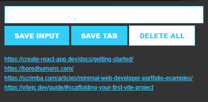

Chrome Extension
This extension allows you to track leads or important sites much like a bookmark bar. I use it all the time to keep track of useful sites and resources for my coding journey.
I love this project as it's one I still use all the time. I made this pretty early on in my web-development journey and it really taught me a lot of fundamental concepts that I struggled with previously such as dynamic rendering, and the different ways to iterate over data instead of the classic C-style for loop.
The biggest challenges I faced on this project was understanding how to go from making a static site, to making it an extension that is usable.